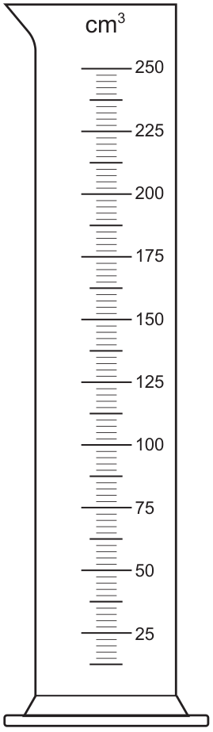
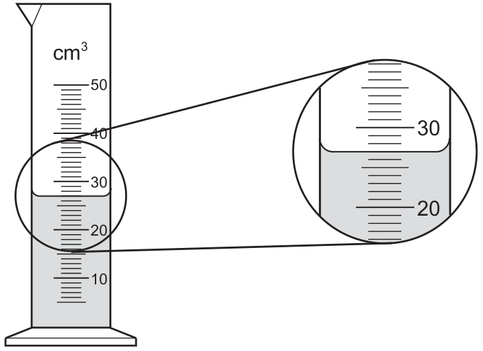
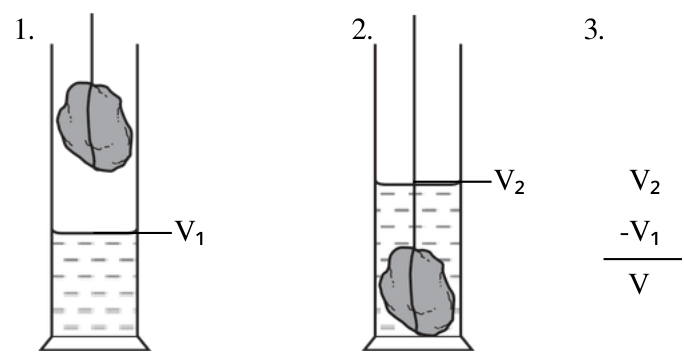

density
what is density?
density is mass per unit volume. it tells you how tightly packed the matter is in an object. materials with high density pack more mass into the same volume than materials with low density.
calculating density
use the equation:
$$\rho = \frac{m}{V}$$
where $\rho$ is density (kg/m³ or g/cm³), $m$ is mass (kg or g), and $V$ is volume (m³ or cm³).
rearranged forms
$m = \rho V$ (find mass if you know density and volume)
$V = \frac{m}{\rho}$ (find volume if you know mass and density)
measuring density of a liquid
- measure the mass: use a balance to weigh a clean, empty measuring cylinder. pour the liquid into the cylinder and weigh it again. subtract to find the liquid's mass.
- measure the volume: read the volume directly from the measuring cylinder scale.
- calculate density: use $\rho = \frac{m}{V}$


measuring density of a regularly shaped solid
- measure the mass: use a balance to weigh the solid.
- measure the volume: use a ruler to measure the dimensions (length, width, height). calculate volume using the shape's formula (e.g., for a cube: V = length × width × height).
- calculate density: use $\rho = \frac{m}{V}$
.pdf (8).png)
measuring density of an irregular solid
use the displacement method (also called the water displacement method):
- measure the mass: use a balance to weigh the solid.
- measure the volume by displacement: fill a measuring cylinder with water and record the initial volume. carefully place the solid into the water (it must sink). record the new volume. the difference is the solid's volume.
- calculate density: use $\rho = \frac{m}{V}$
this method works for any solid that sinks in the liquid used.

floating and sinking
does an object float?
compare the density of the object to the density of the liquid it's in:
- if density of object < density of liquid → object floats
- if density of object = density of liquid → object is neutrally buoyant (floats at any depth)
- if density of object > density of liquid → object sinks
why do objects float?
an object floats when the upward force from the liquid (buoyancy) equals the object's weight. a less dense object displaces enough liquid to create an upward force equal to its weight, so it floats.
liquids floating on liquids (supplement)
when two immiscible (non-mixing) liquids are placed together, the less dense liquid will float on top of the denser liquid.
- if density of liquid a < density of liquid b → liquid a floats on top of liquid b
- if density of liquid a > density of liquid b → liquid a sinks below liquid b
example: oil (less dense) floats on water (more dense).
common density values
- water: 1000 kg/m³ or 1 g/cm³
- ice: 917 kg/m³ (less dense than water, so it floats)
- aluminum: 2700 kg/m³
- iron: 7900 kg/m³
- air: 1.2 kg/m³
key equation
ρ = m / V(density)